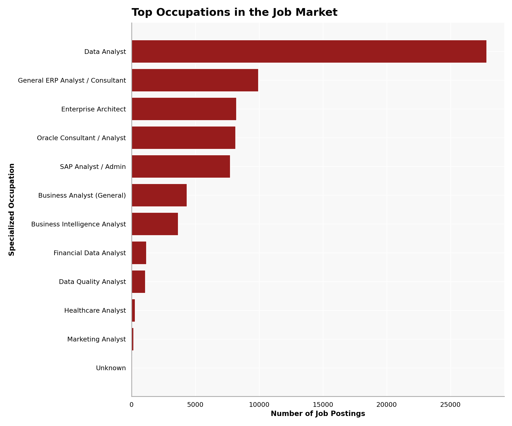
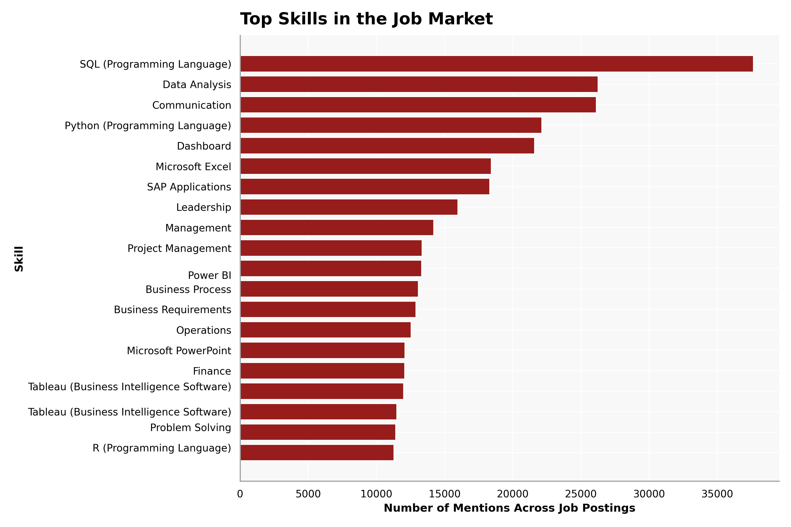
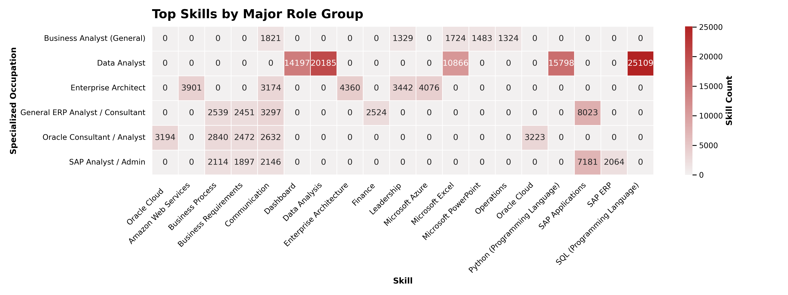
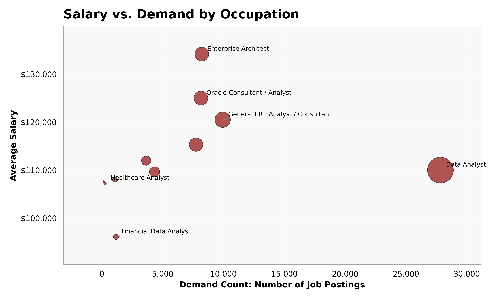
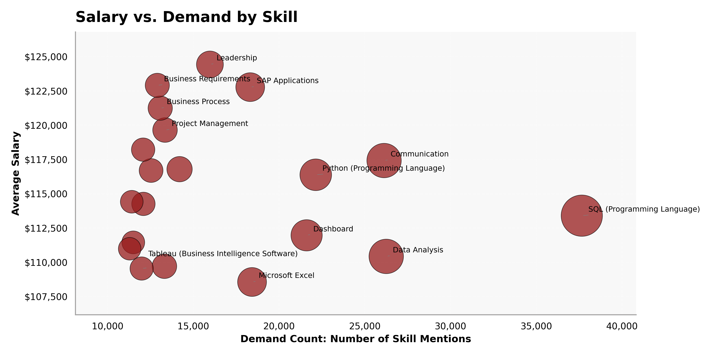

from pyspark.sql import SparkSession
# Start a Spark session
spark = SparkSession.builder.config("spark.driver.host", "localhost").appName("JobPostingsAnalysis").getOrCreate()
spark.catalog.clearCache()
# Load the CSV file into a Spark DataFrame
df = spark.read.option("header", "true").option("inferSchema", "true").option(
"multiLine", "true").option("escape", "\"").csv("./data/clean_job_postings.csv")
# Register the DataFrame as a temporary SQL view
df.createOrReplaceTempView("clean_job_postings")
# Show Schema and Sample Data
print("---This is Diagnostic check, No need to print it in the final doc---")
# comment the lines below when rendering the submission
df.printSchema()
df.show(5)Exploratory Data Analysis
Exploratory Data Analysis (EDA) is a crucial step in the data analysis process that involves summarizing the main characteristics of a dataset, often using visual methods. The goal of EDA is to gain insights into the data, identify patterns, detect anomalies, and test hypotheses before applying more formal statistical modeling techniques.
with open("./data/schema_output.txt", "r") as f:
schema_str = f.read()
print(schema_str)Count of Specialized Occupation
Table
import matplotlib.pyplot as plt
specialized_occupation_counts = (
df
.filter(df["SPECIALIZED_OCCUPATION"].isNotNull())
.groupBy("SPECIALIZED_OCCUPATION")
.count()
.orderBy("count", ascending=False)
)
top_specialized_occupations = (
specialized_occupation_counts
.limit(15)
.toPandas()
)
top_specialized_occupations.columns = [
"Specialized Occupation",
"Count"
]
top_specialized_occupationsVisualization
plt.figure(figsize=(10, 6))
plt.barh(
top_specialized_occupations["Specialized Occupation"],
top_specialized_occupations["Count"]
)
plt.xlabel("Number of Job Postings")
plt.ylabel("Specialized Occupation")
plt.title("Top Specialized Occupations in the Job Market")
plt.gca().invert_yaxis()
plt.tight_layout()
plt.savefig("./images/top_specialized_occupations.png")
plt.show()
Skill Demand Analysis
Table
from pyspark.sql import functions as F
import matplotlib.pyplot as plt
skill_columns = [
"SOFTWARE_SKILLS_NAME",
"SPECIALIZED_SKILLS_NAME",
"COMMON_SKILLS_NAME"
]
skill_dfs = []
for col_name in skill_columns:
temp_df = (
df
.select(
F.lit(col_name).alias("skill_type"),
F.explode(
F.split(
F.regexp_replace(F.col(col_name), r'[\[\]"]', ''),
r',\s*'
)
).alias("skill")
)
.withColumn("skill", F.trim(F.col("skill")))
.filter(F.col("skill").isNotNull())
.filter(F.col("skill") != "")
.filter(F.col("skill") != "None")
)
skill_dfs.append(temp_df)
all_skills = skill_dfs[0]
for temp_df in skill_dfs[1:]:
all_skills = all_skills.unionByName(temp_df)
skill_frequency = (
all_skills
.groupBy("skill")
.count()
.orderBy("count", ascending=False)
)
top_skills = skill_frequency.limit(20).toPandas()
top_skillsVisualization
plt.figure(figsize=(10, 7))
plt.barh(
top_skills["skill"],
top_skills["count"]
)
plt.xlabel("Number of Mentions Across Job Postings")
plt.ylabel("Skill")
plt.title("Top Skills Across Software, Specialized, and Common Skill Categories")
plt.gca().invert_yaxis()
plt.tight_layout()
plt.savefig("./images/top_skills.png")
plt.show()
# Skill-by-Role Analysisfrom pyspark.sql import functions as F
import matplotlib.pyplot as plt
from pyspark.sql.window import Window
# Skill columns to analyze
skill_columns = [
"SOFTWARE_SKILLS_NAME",
"SPECIALIZED_SKILLS_NAME",
"COMMON_SKILLS_NAME"
]
# Choose major role groups by demand
top_roles = (
df
.filter(F.col("SPECIALIZED_OCCUPATION").isNotNull())
.groupBy("SPECIALIZED_OCCUPATION")
.count()
.orderBy(F.col("count").desc())
.limit(6)
)
top_role_names = [
row["SPECIALIZED_OCCUPATION"]
for row in top_roles.collect()
]
skill_dfs = []
for skill_col in skill_columns:
temp_df = (
df
.filter(F.col("SPECIALIZED_OCCUPATION").isin(top_role_names))
.select(
F.col("SPECIALIZED_OCCUPATION"),
F.lit(skill_col).alias("Skill_Type"),
F.explode(
F.split(
F.regexp_replace(F.col(skill_col), r'[\[\]"]', ''),
r',\s*'
)
).alias("Skill")
)
.withColumn("Skill", F.trim(F.col("Skill")))
.filter(F.col("Skill").isNotNull())
.filter(F.col("Skill") != "")
.filter(F.col("Skill") != "None")
)
skill_dfs.append(temp_df)
role_skills = skill_dfs[0]
for temp_df in skill_dfs[1:]:
role_skills = role_skills.unionByName(temp_df)
role_skill_counts = (
role_skills
.groupBy("SPECIALIZED_OCCUPATION", "Skill")
.count()
.orderBy("SPECIALIZED_OCCUPATION", F.col("count").desc())
)
role_window = Window.partitionBy("SPECIALIZED_OCCUPATION").orderBy(F.col("count").desc())
top_skills_by_role = (
role_skill_counts
.withColumn("rank", F.row_number().over(role_window))
.filter(F.col("rank") <= 5)
.orderBy("SPECIALIZED_OCCUPATION", "rank")
)
top_skills_by_role_pd = top_skills_by_role.toPandas()
top_skills_by_role_pdVisualization
import matplotlib.pyplot as plt
import seaborn as sns
# Create pivot table for heatmap
heatmap_data = top_skills_by_role_pd.pivot_table(
index="SPECIALIZED_OCCUPATION",
columns="Skill",
values="count",
fill_value=0
)
plt.figure(figsize=(16, 7))
sns.heatmap(
heatmap_data,
cmap="Reds",
linewidths=0.5,
linecolor="white",
annot=True,
fmt=".0f",
cbar_kws={"label": "Skill Count"}
)
plt.title("Top Skills by Major Role Group", fontsize=16, fontweight="bold")
plt.xlabel("Skill")
plt.ylabel("Specialized Occupation")
plt.xticks(rotation=45, ha="right")
plt.yticks(rotation=0)
plt.tight_layout()
plt.savefig("./images/top_skills_by_role.png")
plt.show()
# Salary vs Demand by Specialized Occupation Analysis ## Tablefrom pyspark.sql import functions as F
salary_demand_by_role = (
df
.filter(F.col("SPECIALIZED_OCCUPATION").isNotNull())
.filter(F.col("AVERAGE_SALARY").isNotNull())
.groupBy("SPECIALIZED_OCCUPATION")
.agg(
F.count("*").alias("Demand_Count"),
F.avg("AVERAGE_SALARY").alias("Average_Salary")
)
.filter(F.col("Demand_Count") >= 50)
.orderBy(F.col("Demand_Count").desc())
)
salary_demand_roles_pd = salary_demand_by_role.toPandas()
salary_demand_roles_pd.head(15)Visualization
import matplotlib.pyplot as plt
import matplotlib.ticker as mtick
plot_df = salary_demand_roles_pd.sort_values(
"Demand_Count",
ascending=False
).head(15)
plt.figure(figsize=(13, 8))
ax = plt.gca()
ax.scatter(
plot_df["Demand_Count"],
plot_df["Average_Salary"],
s=plot_df["Demand_Count"] / 20,
alpha=0.75,
color="#ab362e",
edgecolor="black",
linewidth=0.6
)
label_df = plot_df[
(plot_df["Demand_Count"] >= plot_df["Demand_Count"].quantile(0.65)) |
(plot_df["Average_Salary"] >= plot_df["Average_Salary"].quantile(0.75)) |
(plot_df["Average_Salary"] <= plot_df["Average_Salary"].quantile(0.10))
]
for _, row in label_df.iterrows():
ax.annotate(
row["SPECIALIZED_OCCUPATION"],
xy=(row["Demand_Count"], row["Average_Salary"]),
xytext=(8, 5),
textcoords="offset points",
fontsize=9,
arrowprops=dict(
arrowstyle="-",
color="gray",
lw=0.5
)
)
ax.set_title("Salary vs. Demand by Specialized Occupation", fontsize=16, fontweight="bold")
ax.set_xlabel("Demand Count: Number of Job Postings")
ax.set_ylabel("Average Salary")
ax.xaxis.set_major_formatter(mtick.StrMethodFormatter("{x:,.0f}"))
ax.yaxis.set_major_formatter(mtick.StrMethodFormatter("${x:,.0f}"))
ax.grid(True, linestyle="--", alpha=0.3)
plt.margins(x=0.12, y=0.15)
plt.tight_layout()
plt.savefig("./images/salary_demand_by_role.png")
plt.show()
# Salary vs Demand by Top Skills Analysis ## Tablefrom pyspark.sql import functions as F
skill_columns = [
"SOFTWARE_SKILLS_NAME",
"SPECIALIZED_SKILLS_NAME",
"COMMON_SKILLS_NAME"
]
skill_dfs = []
for skill_col in skill_columns:
temp_df = (
df
.filter(F.col("AVERAGE_SALARY").isNotNull())
.select(
F.col("AVERAGE_SALARY"),
F.explode(
F.split(
F.regexp_replace(F.col(skill_col), r'[\[\]"]', ''),
r',\s*'
)
).alias("Skill")
)
.withColumn("Skill", F.trim(F.col("Skill")))
.filter(F.col("Skill").isNotNull())
.filter(F.col("Skill") != "")
.filter(F.col("Skill") != "None")
.filter(F.col("Skill") != "null")
)
skill_dfs.append(temp_df)
all_skills_salary = skill_dfs[0]
for temp_df in skill_dfs[1:]:
all_skills_salary = all_skills_salary.unionByName(temp_df)
salary_demand_by_skill = (
all_skills_salary
.groupBy("Skill")
.agg(
F.count("*").alias("Demand_Count"),
F.avg("AVERAGE_SALARY").alias("Average_Salary")
)
.filter(F.col("Demand_Count") >= 100)
.orderBy(F.col("Demand_Count").desc())
)
salary_demand_skills_pd = salary_demand_by_skill.toPandas()
salary_demand_skills_pd.head(20)Visualization
import matplotlib.pyplot as plt
import matplotlib.ticker as mtick
plot_df = salary_demand_skills_pd.sort_values(
"Demand_Count",
ascending=False
).head(20)
plt.figure(figsize=(13, 8))
ax = plt.gca()
ax.scatter(
plot_df["Demand_Count"],
plot_df["Average_Salary"],
s=plot_df["Demand_Count"] / 15,
alpha=0.75,
color="#ab362e",
edgecolor="black",
linewidth=0.6
)
# Label important skills only
label_df = plot_df[
(plot_df["Demand_Count"] >= plot_df["Demand_Count"].quantile(0.65)) |
(plot_df["Average_Salary"] >= plot_df["Average_Salary"].quantile(0.75)) |
(plot_df["Average_Salary"] <= plot_df["Average_Salary"].quantile(0.10))
]
for _, row in label_df.iterrows():
ax.annotate(
row["Skill"],
xy=(row["Demand_Count"], row["Average_Salary"]),
xytext=(8, 5),
textcoords="offset points",
fontsize=9,
arrowprops=dict(
arrowstyle="-",
color="gray",
lw=0.5
)
)
ax.set_title("Salary vs. Demand by Skill", fontsize=16, fontweight="bold")
ax.set_xlabel("Demand Count: Number of Skill Mentions")
ax.set_ylabel("Average Salary")
ax.xaxis.set_major_formatter(mtick.StrMethodFormatter("{x:,.0f}"))
ax.yaxis.set_major_formatter(mtick.StrMethodFormatter("${x:,.0f}"))
ax.grid(True, linestyle="--", alpha=0.3)
plt.margins(x=0.12, y=0.15)
plt.tight_layout()
plt.savefig("./images/salary_demand_by_skill.png")
plt.show()